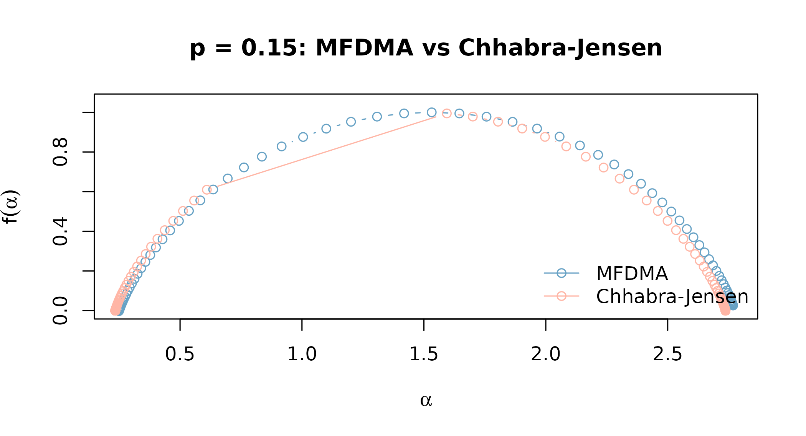

Multifractal methods: MFDMA vs Chhabra-Jensen
Source:vignettes/multifractal-methods.Rmd
multifractal-methods.RmdTwo estimators, one underlying idea
Rtractor ships two multifractal spectrum estimators:
mfdma() (Gu & Zhou 2010) and
chhabra_jensen() (Chhabra & Jensen 1989). Both try to
answer the same question – does this time series need more than one
scaling exponent to describe it, and if so, what’s the full spectrum of
exponents present? – but they get there differently.
mfdma() is a multifractal generalisation of DFA: it
detrends the series against a moving average at a range of scales, then
looks at how the q-th order fluctuation function scales with segment
size. chhabra_jensen() instead treats the series as a
measure and does direct box-counting, avoiding the Legendre transform
that mfdma() (and MF-DFA) rely on.
That difference matters in practice. França et al. (2018) benchmarked
MF-DFA, MF-DMA, and Chhabra-Jensen against each other on both simulated
and human intracranial EEG data, and found Chhabra-Jensen the most
stable of the three across repeated epochs of the same underlying signal
– the reason it’s implemented here alongside mfdma(),
rather than reaching for MF-DFA. See ?chhabra_jensen for
the full reference.
Ground truth, not just plausible-looking data
It’s easy to run a multifractal estimator on rnorm() and
see some output, but that doesn’t tell you whether the
estimator is actually detecting multifractality correctly – white noise
is close to monofractal, so a badly-behaved estimator could still
produce a narrow-looking spectrum purely by chance.
pmodel() solves this by generating a p-model binomial
cascade (Meneveau & Sreenivasan 1987) whose multifractal properties
are directly controlled by its p parameter: values near
0.5 are essentially monofractal, and values far from
0.5 are strongly multifractal. This gives both estimators a
signal with known ground truth to be checked against,
rather than just a signal that happens to look complex.
y_calm <- pmodel(8192, p = 0.48, seed = 1) # near-monofractal
y_multi <- pmodel(8192, p = 0.15, seed = 1) # multifractal
y_strong <- pmodel(8192, p = 0.05, seed = 1) # strongly multifractalBoth estimators expect the raw p-model output directly –
mfdma() and chhabra_jensen() each do their own
internal integration/box-counting, so don’t difference or log-transform
it first.
MFDMA on the ground-truth series
mf_calm <- mfdma(y_calm, n_min = 10, n_max = 400, n_scales = 25)
mf_multi <- mfdma(y_multi, n_min = 10, n_max = 400, n_scales = 25)
mf_strong <- mfdma(y_strong, n_min = 10, n_max = 400, n_scales = 25)
widths_mfdma <- c(
calm = diff(range(mf_calm$alpha)),
multi = diff(range(mf_multi$alpha)),
strong = diff(range(mf_strong$alpha))
)
widths_mfdma
#> calm multi strong
#> 0.01884055 2.51858115 4.29434619The estimated spectrum width increases monotonically as
p moves away from 0.5, exactly as the
underlying cascade predicts – mfdma() is genuinely picking
up the multifractal structure, not just returning a wide spectrum
regardless of input.
Chhabra-Jensen on the same series
cj_calm <- chhabra_jensen(y_calm, scales = 1:11)
cj_multi <- chhabra_jensen(y_multi, scales = 1:11)
cj_strong <- chhabra_jensen(y_strong, scales = 1:11)
widths_cj <- c(
calm = diff(range(cj_calm$alpha)),
multi = diff(range(cj_multi$alpha)),
strong = diff(range(cj_strong$alpha))
)
widths_cj
#> calm multi strong
#> 0.04389655 2.50250019 4.24792751Same pattern, and the two estimators land within a few percent of each other on the same data – independent cross-validation, not just each method being internally consistent with itself.
plot(
mf_multi$alpha, mf_multi$f, type = "b", col = rtractor_palette("core")[["steel_blue"]],
xlab = expression(alpha), ylab = expression(f(alpha)),
main = "p = 0.15: MFDMA vs Chhabra-Jensen",
ylim = c(0, 1.05)
)
lines(cj_multi$alpha, cj_multi$falpha, type = "b", col = rtractor_palette("core")[["coral"]])
legend(
"bottomright", legend = c("MFDMA", "Chhabra-Jensen"),
col = rtractor_palette("core")[c("steel_blue", "coral")], lty = 1, pch = 1, bty = "n"
)
chhabra_jensen()’s spectrum also has a theoretical
constraint worth knowing about: the peak height,
max(falpha), should sit close to 1 – the
fractal dimension of the one-dimensional support the measure lives on.
That’s a useful sanity check independent of the p-model comparison
above:
max(cj_multi$falpha)
#> [1] 0.9945943Which one should I use?
- If you want the more stable estimate across repeated epochs
of the same signal, and your series can be made strictly positive (or
you’re willing to apply a sigmoid transform), reach for
chhabra_jensen()first – see França et al. (2018) for why. - If your series already has a natural DFA-style workflow around it,
or you need
mfdma()’s cross-package parity with other MF-DFA-family tools,mfdma()is the more familiar entry point. - Either way, check the R-squared / fit diagnostics each function
returns (
r_squared_alpha,r_squared_falpha,r_squared_Dqforchhabra_jensen()) before trusting an individualqvalue’s estimate, especially near the edges of theqrange.
References
Chhabra A, Jensen RV. Direct determination of the f(alpha) singularity spectrum. Phys Rev Lett 1989;62:1327-1330.
Gu GF, Zhou WX. Detrending moving average algorithm for multifractals. Phys Rev E 2010;82:011136.
Meneveau C, Sreenivasan KR. Simple multifractal cascade model for fully developed turbulence. Phys Rev Lett 1987;59:1424-1427.
Franca LGS, Miranda JGV, Leite M, Sharma NK, Walker MC, Lemieux L, Wang Y. Fractal and multifractal properties of electrographic recordings of human brain activity: toward its use as a signal feature for machine learning in clinical applications. Front Physiol 2018;9:1767.